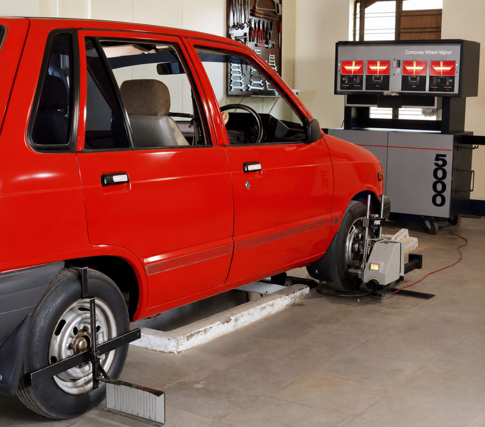
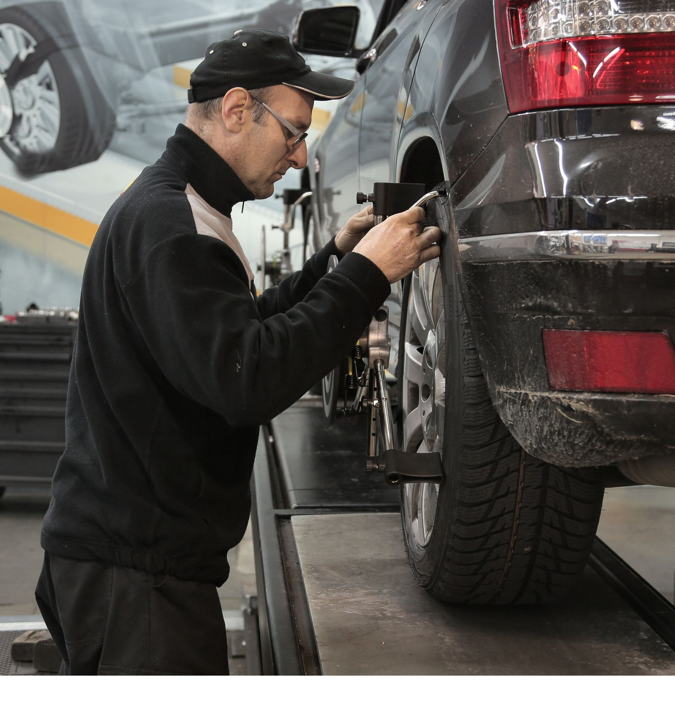

Wheel alignment & brake shop · 815 S Main St, Bryan, TX
Fifty-one years of getting your wheels straight.
Bobby Mansel has run this shop on South Main Street since 1975. Real reviews describe fair prices, fast turnaround, and a clean, well-managed shop — the reasons 208 customers have left a rating.
815 S Main St #6946, Bryan, TX 77803

What we do
Alignment, brakes & front-end work
Built from real review topics on Mansel's Google Business Profile — not a confirmed price list. Call and describe your vehicle.
- >
Wheel Alignment
The shop's namesake service — the most-mentioned topic in real reviews.
- >
Front-End Alignment
Specifically called out by reviewers alongside general alignment work.
- >
Brake Work
Reviewers mention brake service alongside alignment jobs.
- >
Bearings & Suspension
One reviewer describes bearings pressed into knuckles/spindles, done faster than quoted.
- >
Steering Play Diagnosis
Reviewers return for repeat vehicles when they notice play in the steering.
- >
Free Re-Checks
One reviewer describes getting a second side finished at a good price after the first — ask what's possible.

Service list above is built from real review topics ("alignment," "brake work," "wheel alignment," "front end alignment") — confirm exactly what's needed by calling (979) 779-4862.
Our story
Three generations of Bryan drivers have come through this shop
Bobby Mansel opened this shop on South Main Street in 1975 — 51 years ago. Real reviews describe a shop that's stayed consistent the whole way through: fair prices, quick turnaround, and a clean, well-managed operation. Staff members Dennis and AC are named directly in recent reviews for professional, friendly service, and repeat customers describe coming back with a second vehicle because the first visit went well.
Source: Mansel's Wheel Alignment's public Google Business Profile — lead verified 2026-09-05, review text read for internal research 2026-09-21. Review text itself is not republished on this page as quotes.
At a Glance
- 1975 Bobby Mansel opens the shop on S Main St, Bryan
- 2026 Still independently owned & operated, 51 years later
- Today 208 Google reviews, 4.7-star average — the largest review base of any shop in this trade in Bryan/College Station
What customers mention most
Straight from Mansel's own Google topic tags
Google groups review mentions into topics on a business's own profile. Here's what customers bring up most about Mansel's — shown as topics, not quoted reviews.
Topic counts as shown on Mansel's Wheel Alignment's public Google Business Profile — verified 2026-09-21.
Customer reviews
Real reviews from real customers
Google reviews will appear here once connected. With 208 reviews on file, this will be one of the most review-rich pages we build — we'll display exactly what customers have said, nothing invented, nothing edited.
Google reviews will appear here once connected.
See us on GoogleAs shown on Mansel's Wheel Alignment's public Google Business Profile — verified 2026-09-21.
Find us & hours
On South Main Street in Bryan
Find us
815 S Main St #6946
Bryan, TX 77803
No independent website is listed for Mansel's — a link found in directories is a generic multi-business template, not the shop's own site (verified 2026-09-21).
Hours
Call or message for hours.
Hours were not published on the shop's Google Business Profile at verification — confirm before your visit.
Fifty-one years, and still straightening wheels
Fair prices, fast turnaround, and a shop 208 reviewers keep coming back to.